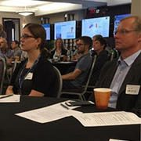
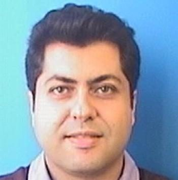

The fifth annual Radiology Research Symposium was held on Friday June 23, 2017 at the Longwood Inn Conference Center. There were 25 posters presented representing a wide variety of Radiology research labs at Brigham and Women’s Hospital. Giles Boland, MD, the Chair of the Radiology Department gave opening remarks as he addressed his first research symposium since taking over as Chair of the department in August 2016. Clare Tempany, MD, Vice Chair of Research in the department provided an update on the department’s research enterprise, including an overview of grant funding, numbers of grant applications in the past year, industry sponsored research in the department and recognition of accolades and award winners since the last symposium.
The keynote address was provided by Mark Michalski, MD, the Executive Director of the Center for Clinical Data Science which is supported and funded by both MGH and BWH, and by financial support from General Electric Healthcare. Dr. Michalski’s talk, Machine Learning in Medical Imaging was very well received, especially as he emphasized the Center’s goal of working very closely with the BWH Radiology research community.
Presentations followed by three faculty researchers in the department, Fiona Fennessy, MD, PhD spoke about Multi-omics in Prostate Cancer, Sharmila Dorbala, MD, MPH presented her research in Molecular Imaging of Cardiac Amyloidosis, and C-F Westin, PhD gave a history and physics lesson in his talk Revisiting Mathematics in MRI Physics.
After an extended lunch and poster viewing (and scoring session), the remaining hour of the Symposium was dedicated to providing a connection between the Education Division of the department with the Research Division. Glenn Gaviola, MD, Program Director of the BWH DR Residency program and William Mayo-Smith, MD, Vice Chair of Education gave their Educational Perspective on Radiology Training and Research. Sharath Bhagavatula, MD and Jeffrey Guenette, MD, the first two DR residents on the new 3-2 Clinician Scientist Research Pathway, presented their respective research projects, Photoacoustic Image Guidance for Percutaneous Interventions and Advanced Neuroimaging of PTSD, Concussion, and Repetitive Subconcussive Head Impacts. The last presentation of the day was by Shanna Matalon, MD, one of two Senior Resident Research Award winners, on her research project Procedural Training in Radiology Residency: Variability in the Use of Simulation.

The last fifteen minutes of the Symposium were dedicated to the announcement of the winners of the poster session. The first prize of $500 towards research lab expenses went to Min Zhou for his poster Magnetic Resonance Spectroscopy Treatment Response and Progression Free Survival in IDH-mutant Gliomas. The second prize of $250 towards research lab expenses went to Alireza Ziaei, MD for his poster Needle Trajectory Segmentation for MRI Guided Prostate Biopsy. Congratulations to our two winners and to all the speakers and poster presenters for an extremely well-received day of research sharing.
Content carried over from https://ncigt.org/the-fifth-annual-radiology-research-symposium/.